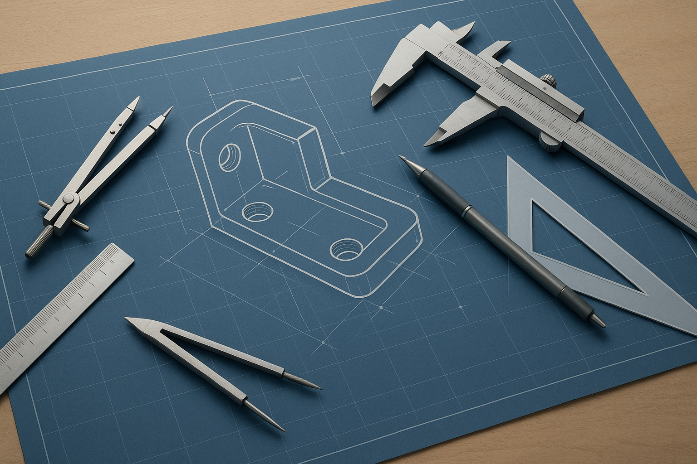
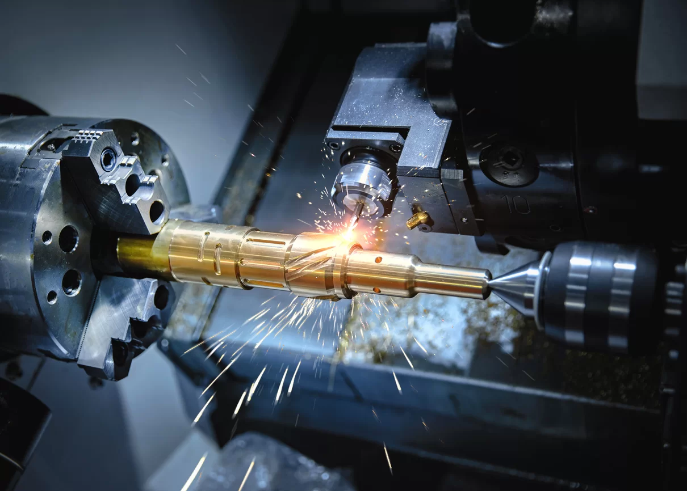

Services
Pick the service path that matches the work.
Custom tooling, aerospace machining, foundry tooling, prototype parts, build-to-print programs, and broader manufacturing support are organized by service so teams can find the right path quickly.

Custom Workholding
Hydraulic, pneumatic, manual, 4-axis, 5-axis, tombstone, gaging, and testing fixtures built around the part, process, and operator.

Aerospace Tooling
Precision CNC machining for aerospace tooling and advanced alloys where stability, documentation, and repeatability matter.

Foundry Tooling
Permanent molds, low-pressure molds, tilt pour molds, static pour molds, sand cast patterns, and corebox configurations.

Precision Manufactured Parts
Prototype machining and precision manufactured components backed by CNC, EDM, grinding, assembly, and inspection.

Built-to-Print Tooling
Manufacturing for existing prints and CAD packages, with concept support, machining, assembly, testing, and finishing help.

Custom Manufacturing
A broad precision manufacturing floor with 5-axis machining, boring mills, vertical milling, turning, high-speed machining, EDM, grinding, assembly, and inspection.